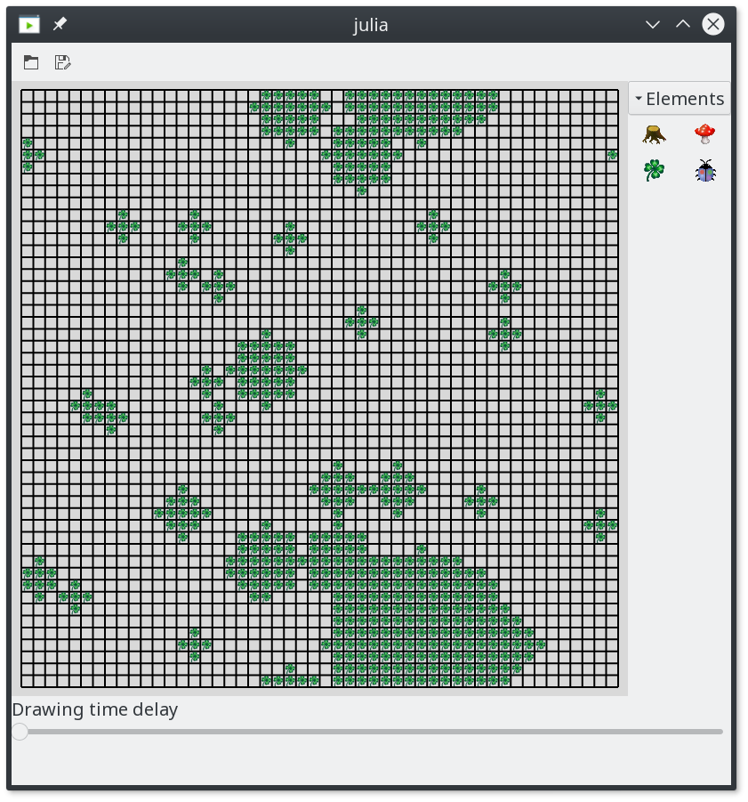

JuliaKara Examples
Table of Contents
1 Particle Swarm Optimisation using JuliaKara
1.1 Problem description
The aim of this example is to use multiple Karas to find the region with the highest food density (leafs), in order to feed all Karas. The current density \(d\) at a location \(p\) is determined by counting all the fields in a radius \(r\) around \(p\). Therefore,
\begin{equation} d = \frac{n_{leafs}}{n_{fields}} \end{equation}where \(n_{leafs}\) is the number of found leafs and \(n_{fields}\) is the number of total fields.
1.2 Implementation
The implementation is made based on particle swarm optimisation (PSO) 1. Herein the velocity \(v_{i,j}\) and position \(p_{i,j}\) of a particle \(i\) (or Kara) is updated as follows:
\begin{equation} v_{i,j+1} = v_{i,j} + c_1 \cdot r_1 \cdot (p_{i,j}^{best} - p_{i,j}) + c_2 \cdot r_2 \cdot (p_{j}^{gbest} - p_{i,j}) \end{equation} \begin{equation} p_{i,j+1} = p_{i,j} + v_{i,j+1} \end{equation}where \(j\) denotes the current step, \(p_{i,j}^{best}\) denotes the best known position for particle \(i\), \(p_{j}^{gbest}\) denotes the globally best known position, \(c_1\) and \(c_2\) are learning factors an usually \(c_1 = c_2 = 2\) and \(r_1\) and \(r_2\) are random numbers uniformly distributed between 0 and 1.
However, two problems arise:
- The best known points change as karas, of course, eat the leafs they find
- In this world Karas should only be able to move one step per iteration
Therefore, an alternative implementation based on PSO is derived in Section 1.3.
1.3 Solution
1.3.1 Startup
To startup JuliaKara it is loaded and for convenience some additional methods
are imported
using JuliaKara
import JuliaKara.JuliaKara_noGUI.ActorsWorld:Location,
Orientation,
location_fix_ooBound,
actor_definition_at_location,
Actor
import JuliaKara.JuliaKara_noGUI.ACTOR_DEFINITIONS
1.3.2 Initialise the World
The world's size is defined by the following variables:
const world_width = 50
const world_height = 50
Initially the world is created empty.
world = World(world_width,world_height,"PSO Kara")
- Fill the world with random leafs
The leaf distribution is generated such that the world consists of large, medium and small sized spots. Therefore, two functions are defined which generate random points withing the world and random sizes relative to the world's size.
"Returns a random points withing the word of size world_width x world_height" function randP() Location(rand(1:world_width),rand(1:world_height)) end """ Returns a randomises size relative to the world The function takes the smalles dimension and mutliplies it with the desired relative size with a small randomisation. """ function randS(relSize::Float64) s = convert(Int,round( min(world_width,world_height)*(relSize + relSize*rand()) )) return max(s,1) endDefine the parameters for generating the areas of leaf. The leaf areas (combination of random location and random size) are stored in a Tuple where the first index is the location and the second index is the size.
# Number of leaf areas n_big = 1 n_medium = rand(5:10) n_small = rand(20:30) # Size of leaf areas points=[ [(randP(),randS(0.15)) for _ in 1:n_big]..., [(randP(),randS(0.03)) for _ in 1:n_medium]..., [(randP(),randS(0.005)) for _ in 1:n_small]... ]Draw the leaf areas as circles using the radius p[2].
for p in points # Iterate of all possible coordinates from -r to +r in x and y direction. for dx in -p[2]:p[2], dy in -p[2]:p[2] # Catch errors which occour when placing leafs above each other try # Check if the current location is within the circle if dx^2+dy^2 <= p[2]^2 # The location is obtained by adding the dx and dy to the # coordinate stored in p[1]. loc_fix = location_fix_ooBound( world.world,Location(p[1].x+dx,p[1].y+dy) ) # Place a leaf at the calculated location. JuliaKara.JuliaKara_noGUI.place_leaf(world.world,loc_fix.x,loc_fix.y) end end end end # Redraw the world JuliaKara.world_redraw(world,true)The code above generates the random world of leafs shown in Figure 1.

Figure 1: 50x50 World filled with random areas of leafs
1.3.3 Searching Algorithm
As described in Section 1.2 the "quality" of a location is determined by its density, meaning the ration of leafs and empty fields around the location.
"The function returns the current leaf density at location p"
function density_at(world::JuliaKara.World_GUI,p::Location,r::Int)
# Number of leafs
c_leafs = 0
# Iterated of all possible positions within -r and +r in x and y
for dx in -r:r, dy in -r:r
# Calculate the location by adding dx and dy to p.
pos = location_fix_ooBound(world.world,Location(p.x+dx,p.y+dy))
# Check if there is a leaf at the position
if actor_definition_at_location(world.world,pos,ACTOR_DEFINITIONS[:leaf])
c_leafs += 1
end
end
# The number of total fields is (2*r+1)
return c_leafs / (2r+1)^2
end
One of the problems mentioned in Section 1.2 is that the Karas eat the leafs they find. Therefore, it is difficult to implement the exact PSO algorithm as \(v_{i,j}\), \(p_{i,j}^{best}\) and \(p_{i,j}^{gbest}\) change in every iteration. Hence, for this implementation \(v_{i,j}\) is neglected for the step \(j+1\), \(p_{i,j}^{best}\) is assumed to the location of a (random) field around kara with a leaf and \(p_{i,j}^{qbest}\) is the currently best density.
To obtain \(p_{i,j}^{best}\) a function next_leaf is defined as follows.
"The functions returns the movement (dx,dy) needed to reach a leaf."
function next_leaf(world::JuliaKara.World_GUI,p::Location)
# Shuffle the list of possible dx,dy movements around the current position to
# always return a different one.
for dp in shuffle([(1,0),(-1,0),(0,1),(0,-1),(-1,1),(1,1),(1,-1),(-1,-1)])
# Calculate the location
pos = location_fix_ooBound(world.world,Location(p.x+dp[1],p.y+dp[2]))
# Only take this location if a leaf and no other kara is there.
if (actor_definition_at_location(world.world,pos,ACTOR_DEFINITIONS[:leaf])
&& !actor_definition_at_location(world.world,pos,ACTOR_DEFINITIONS[:kara]))
return dp
end
end
# If no possible location was found return the current.
return (0,0)
end
In each iteration the Karas are updated by means of the implementation described in Section 1.2.
function update_kara!(world::JuliaKara.World_GUI,kara::Actor,p_gbest::Location)
# Parameters for the PSO
c_1,c_2,r_1,r_2 = 50,2,rand(),rand()
# Relativ movement to the next leaf as tuple
dL = next_leaf(world,kara.location)
# Relative movement to the currently highest density as tuple
dGg = ((p_gbest.x - kara.location.x), (p_gbest.y - kara.location.y))
# Ceck if moving out at one side of the world is faster than moving across
dGg = (
abs(dGg[1]) > world_width/2 ? -sign(dGg[1])*(world_width-abs(dGg[1])) : dGg[1],
abs(dGg[2]) > world_height/2 ? -sign(dGg[2])*(world_height-abs(dGg[2])) : dGg[2],
)
# Velocities or relative movements for the next step
# Round and convert to integer, as kara can only move by single fields
dx = convert(Int,round(c_1 * r_1 * dL[1] + c_2 * r_2 * dGg[1]))
dy = convert(Int,round(c_1 * r_1 * dL[2] + c_2 * r_2 * dGg[2]))
# At this point it is possible that dx and/or dy are 0.
# Therefore to prevent stagnation pick a random direction.
dx = dx==0 ? rand([-1,1]) : dx
dy = dy==0 ? rand([-1,1]) : dy
# Perform the movement under the restriction of only moving one field into x
# and y.
if dx<0
# Turn west
while kara.orientation != Orientation(:WEST)
turnLeft(world,kara)
end
move(world,kara)
elseif dx>0
# Turn east
while kara.orientation != Orientation(:EAST)
turnLeft(world,kara)
end
move(world,kara)
end
if dy<0
# Turn south
while kara.orientation != Orientation(:SOUTH)
turnLeft(world,kara)
end
move(world,kara)
elseif dy>0
# Turn north
while kara.orientation != Orientation(:NORTH)
turnLeft(world,kara)
end
move(world,kara)
end
# If Kara is on a leaf ... eat it!
if onLeaf(world,kara)
removeLeaf(world,kara)
end
end
As all Karas within the world need an update in the iteration another method is defined which updates a vector of Karas. In some cases it is possible that the maximum density is reached at multiple locations, therefore, the desired maximum is picked randomly from the list of multiple karas.
function update_kara!(world::JuliaKara.World_GUI,karas::Vector{Actor})
# All current densities
dens = [density_at(world,pi.location,2) for pi in karas]
# The maximum density
dens_max = maximum(dens)
# All indices where the maxmimum density occured
dens_inds = filter(i->dens[i]==dens_max,1:length(karas))
# Iterate over all karas
for (i,kara) in enumerate(karas)
# If kara itself is contained in the maximum densites then take this
# location
ind = i in dens_inds ? i : shuffle(dens_inds)[1]
# Update this kara
try
update_kara!(world,
kara,
karas[ind].location
)
end
end
end
The number of Karas to be placed in the world is defined by the following variable.
number_of_karas = 20
Place the Karas at random positions.
# Store all Karas in a vector
karas = Actor[]
sizehint!(karas,number_of_karas)
for i in 1:number_of_karas
# Generate a random positon
loc = randP()
# Place Kara there if no other Kara is placed there.
while actor_definition_at_location(world.world,loc,ACTOR_DEFINITIONS[:kara])
loc = randP()
end
# Add kara to the list of karas and place in, facing north, into the world.
push!(karas,place_kara(world,loc.x,loc.y,:NORTH))
end
Figure 2: Starting positions of 20 Karas
Run the optimisation for 500 steps.
for i in 1:500
update_kara!(world,karas)
end

Figure 3: Karas start to eat
2 Control Kara using the keyboard
2.1 Problem description
The aim of this example is to enable keyboard controls for Kara. The arrow keys shall be used to
- move forward,
- turn right and
- turn left.
l shall be used to place or remove a leaf.
2.2 Implementation
To startup JuliaKara it is loaded and for convenience some additional methods
are imported.
Furthermore to connect signal to functions and events Gtk is loaded.
using JuliaKara
using Gtk
using Gtk.ShortNames
import JuliaKara.JuliaKara_noGUI.Actor
The world is initialised as follows.
@World (10,10)
To allow connection of various worlds (windows) to the contained Karas the function
kara_keybinding is defined which brings world and kara into a local scope
to the returned function which actually performs the desired operations.
The possible operations are defined in a dictionary named actions.
function kara_keybinding(world::JuliaKara.World_GUI,kara::Actor)
function (widget,event)
actions = Dict(
Gtk.GdkKeySyms.Up => ()->move(world,kara),
Gtk.GdkKeySyms.Left => ()->turnLeft(world,kara),
Gtk.GdkKeySyms.Right => ()->turnRight(world,kara),
Gtk.keyval("l") => function ()
if onLeaf(world,kara)
removeLeaf(world,kara)
else
putLeaf(world,kara)
end
end
)
if event.keyval in keys(actions)
actions[event.keyval]()
end
end
end
To connect the defined function the function signal_connect is used, which
binds the function returned from kara_keybinding to the key-release-event 2.
id = signal_connect(
kara_keybinding(world,kara),
world.window,
"key-release-event"
)
Now it's possible to move Kara using the arrow keys and place and remove leafs
using l.